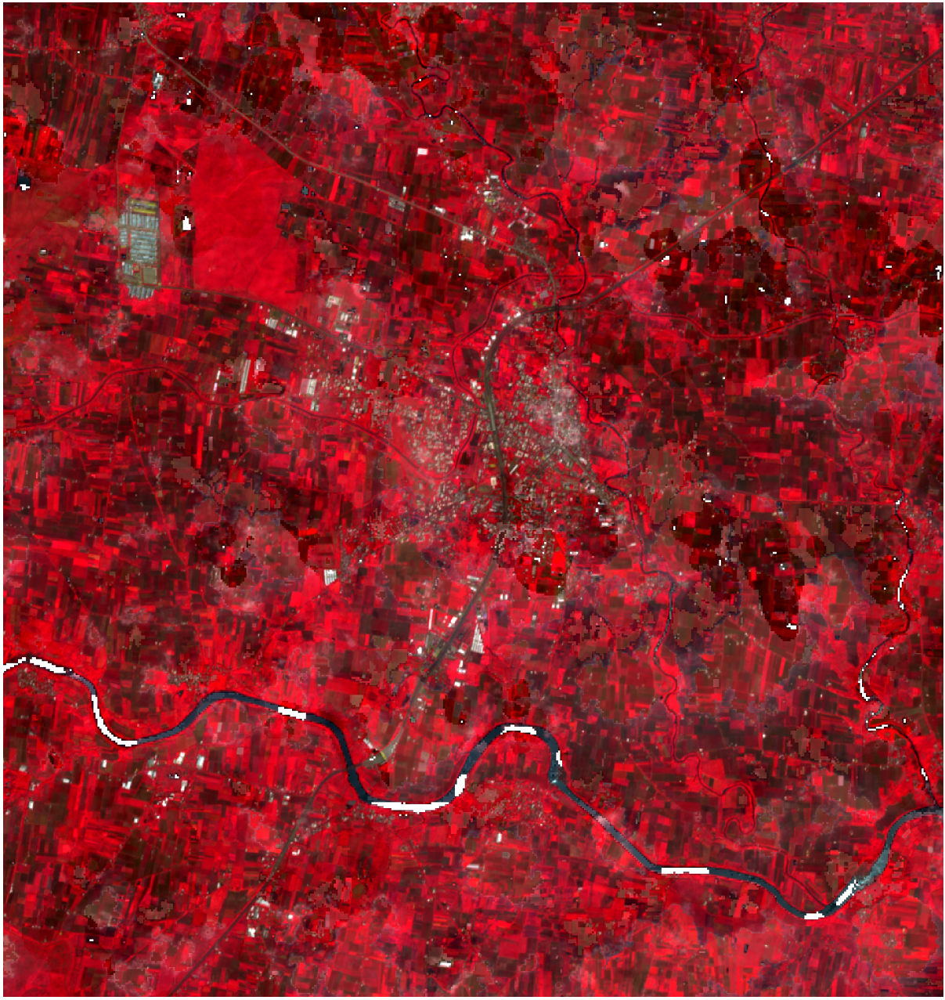
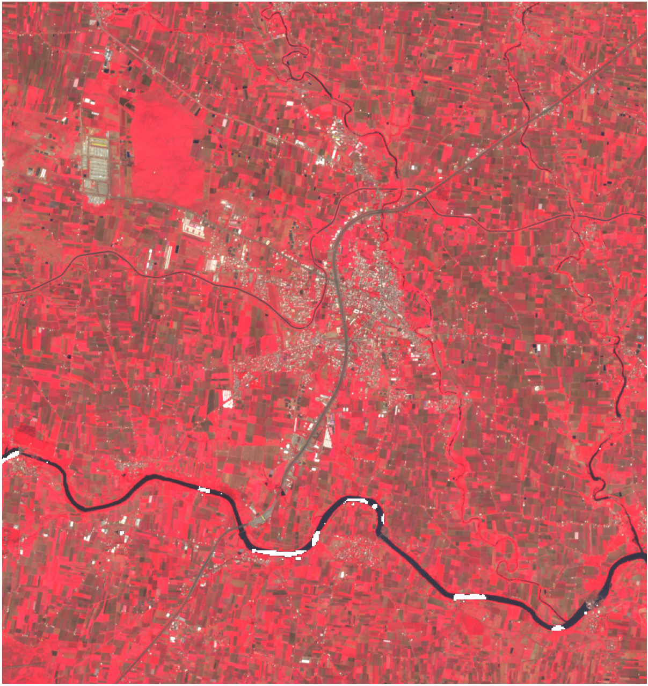

Nashik Grapes Yield Deviation Analysis
Key findings for operators, insurers, and analysts
This report documents an early biological risk signal derived from Sentinel-2 vegetation time series. The logic is traceable from acquisition through baseline comparison to external validation. The inference is AOI-level, not parcel-specific.
The central risk is delayed recognition of biological stress
Traditional indicators such as prices, arrivals, export flows, and claims are informative but temporally late. The operational question is whether crop stress is observable early enough to change decisions before optionality narrows. This report evaluates timing of detection, not price forecasting.
Risk under evaluation
Detect crop underperformance before contracts, procurement, insurance, or supply decisions become materially more expensive to adjust.
Why conventional signals lag
Economic indicators are downstream expressions of agronomic conditions. Satellite observations record canopy condition before those downstream adjustments become visible. This inference is temporal, not causal for price formation.
Research Objective and Framing
The report is framed as a retrospective remote-sensing test of whether persistent vegetation deviation functions as an early proxy for seasonal underperformance under a defined baseline comparison. The proxy reflects canopy condition, not labeled yield.
Hypothesis
Persistent vegetation index deviation can act as an early proxy for crop underperformance.
Research question
Can satellite-derived vegetation signals detect agronomic stress before market signals emerge?
Approach
- Multi-year NDVI baseline comparison
- Weekly temporal aggregation
- Cross-validation with weather and reported damage events
How the signal is constructed and validated
The method converts raw satellite observations into weekly crop-health trajectories, compares the target season against baseline behavior, and tests whether the observed deviation aligns with independent evidence of agronomic stress. Cause, mechanism, observation, and scope are kept explicit throughout.
Data sources
Sentinel-2 vegetation indices, weather-event reports, crop-damage reporting, and harvest-window context.
Signal construction
Weekly target-season vegetation trajectory compared against the 2020-2022 baseline.
Yield linkage
Vegetation deviation is interpreted as an underperformance proxy rather than a direct yield estimate. The proxy is biologically grounded but not yield-labeled.
Validation
Persistence, external-event alignment, and multi-index agreement are used to separate structural deviation from measurement noise.
Observation system
The signal is derived from optical satellite imagery processed as a seasonal time series rather than from isolated scenes. Temporal aggregation reduces noise but may smooth short-term shocks.
Platform
- Satellite: Sentinel-2 (MSI)
- Product: Sentinel-2 L2A surface reflectance
- Source: Planetary Computer STAC
- Revisit frequency: ~5 days with the Sentinel-2A/2B constellation
Bands used
- B08 NIR
- B04 Red
- B05 Red-edge
- B02 Blue
- SCL scene classification for cloud and quality masking
| Attribute | Value |
|---|---|
| Operational resolution | 10 m for NDVI bands (B08, B04); 20 m for the red-edge context band B05 |
| Acquisition window | 2020-09-01 to 2024-04-30 across baseline and target seasons |
| Role in this report | Weekly crop-health monitoring for retrospective stress detection and timing analysis |
Nashik grape belt coverage
AOI definition
Region of interest: Nashik vineyard belt, Maharashtra, India.
| Coordinate | Value |
|---|---|
| West | 73.94 |
| South | 20.12 |
| East | 74.03 |
| North | 20.21 |
Regional context
The AOI represents the Nashik grape belt used in this retrospective case. The unit of analysis is AOI-level canopy behavior rather than parcel-level yield estimation. This inference is regional, not parcel-specific.
Why NDVI is appropriate for this analysis
Grapes are canopy-driven crops, and seasonal canopy vigor is directly relevant to crop condition. NDVI is therefore an appropriate first-order indicator for this retrospective analysis because canopy stress alters red and near-infrared reflectance. NDVI does not isolate a specific stress driver.
Canopy dependence
Grape production depends on sustained canopy health through the season.
What NDVI captures
NDVI is sensitive to leaf density, greenness, and overall canopy vigor.
Stress detectability
Stress reduces chlorophyll and canopy performance, which changes reflectance in the red and NIR bands.
NDVI and companion indicators
NDVI is the primary signal. EVI and NDRE are used as supporting indices to reduce dependence on a single vegetation measure and to test whether the observed stress generalizes across related canopy metrics. Multi-index agreement strengthens inference but does not identify a unique biophysical cause.
Band mapping
- NIR: B08
- Red: B04
- Red-edge support: B05
Processing steps
- Cloud and quality masking via SCL
- Reflectance scaling and raster alignment
- Weekly temporal aggregation
Baseline logic
- Baseline seasons: 2020-2022
- Target season: 2023
- Week-by-week alignment across season bins
How deviation was measured
Periods compared
- Baseline period: 2020-2022 seasons
- Target period: 2023 season
- Season window: September to April
Deviation formula
Weekly percentage deviation is computed as:
How the 13.3% was computed
The headline 13.3% is the final pre-harvest vegetation underperformance proxy. It is computed as the median negative composite percentage deviation in the final 42-day pre-harvest window, where the composite combines NDVI, EVI, and NDRE deviation signals. This measure reflects pre-harvest canopy condition, not realized yield.
Satellite signal detection
Figure 1 demonstrates sustained deviation from the baseline envelope beginning on 2023-10-09, establishing the earliest point of detectable structural divergence. The inference is based on persistence across aligned weeks, not on a single weak scene.

Figure 1. Weekly AOI-level NDVI for the 2023 season versus the 2020-2022 baseline envelope. Divergence begins on 2023-10-09 and persists thereafter, establishing the earliest detectable structural break under the defined baseline comparison. This figure supports AOI-level inference only.
Decision table
| Signal | What it means | What you do |
|---|---|---|
| Baseline seasons | 2020-2022 establish the expected seasonal vegetation path. | Use as reference for normal crop-health behavior. |
| 2023 deviation | 13.3% vegetation underperformance proxy, consistent with underperformance under the defined baseline comparison. | Escalate field validation, sourcing review, and exposure management. |
| Signal strength | Moderate; persistent divergence across aligned weeks. | Treat the deviation as evidence-backed biological stress at AOI scale. |
Signal Robustness and Temporal Consistency
Figure 2 summarizes the multi-index stress signal. The evidence is supported by duration as well as magnitude: the target season remains below baseline in 26 valid weekly observations from 2023-10-09 through 2024-04-22. Under normal baseline conditions, sustained deviation across 26 aligned temporal bins is statistically unlikely without a structural driver.

Figure 2. Composite stress score formed from NDVI, EVI, and NDRE deviation. The figure matters because it shows that the signal is multi-index and temporally persistent, not confined to one scene or one vegetation metric.
Robustness interpretation
- The signal is supported by duration, not isolated observations.
- Single-scene divergence can result from transient haze, residual cloud, or phenological noise; multi-week persistence is materially harder to explain as artifact.
- Under normal baseline conditions, sustained deviation across 26 aligned temporal bins is statistically unlikely without a structural driver.
- This conclusion is supported by three independent layers: temporal persistence, multi-index agreement, and external event alignment.
Image-based evidence layer
Figure 3 provides the spatial anomaly field, while Figure 4 assembles the baseline-target-anomaly comparison. Together they demonstrate that the time-series result is also visible in the spatial and image domains. The image evidence is interpretive support, not an independent yield measurement.

Figure 3. Spatial NDVI anomaly relative to the baseline reference. The figure matters because it localizes below-baseline canopy condition within the AOI and shows that the deviation in Figure 1 is spatially distributed rather than pixel-isolated.

Figure 4a. Early-October baseline false-color Sentinel-2 composite assembled from acquisitions on 2020-10-06 05:27:09.024000+00:00, 2021-10-11 05:27:39.024000+00:00, 2022-10-01 05:26:51.024000+00:00. Scene-level cloud cover for the input dates ranged from 4.3% to 28.0% before AOI masking. Brighter red tones represent stronger vegetation response under consistent scaling. This reference is composited at AOI scale.

Figure 4b. Target-season false-color Sentinel-2 acquisition from 2023-10-11 05:27:39.024000+00:00. Scene-level cloud cover was 0.8%, and valid AOI coverage remained near complete after filtering. Relative to Figure 4a, canopy response is weaker across the AOI, which is consistent with the divergence recorded in Figure 1.
Figure 4c. Baseline-subtracted NDVI anomaly map for the target season. Negative anomaly values mark below-baseline canopy response; values near zero mark baseline-consistent vegetation condition. The map supports AOI-level anomaly interpretation, not parcel-level diagnosis.
Processing note
All images are normalized using consistent reflectance scaling and AOI boundaries.
Legend interpretation
- False-color red: higher vegetation response
- Yellow / green tones: reduced vegetation response
- NDVI anomaly map: negative values indicate below-baseline canopy condition
Ground evidence and delayed market expression
Ground / market reality
Weather and industry reports document vineyard damage across the Nashik grape belt. The mechanism is agronomic disruption followed by canopy impairment, whereas production and market outcomes become visible in the February-April harvest window rather than at the onset of biological stress.
Sequence validation
Observed sequence matches expected crop stress propagation. Extreme weather events act as the exogenous driver, canopy function is the biological mechanism, vegetation-index deviation is the satellite observation, and harvest visibility is the downstream outcome. NDVI records canopy response but does not isolate a specific stressor.
| Date | Event | Source |
|---|---|---|
| March 4-18, 2023 | Unseasonal rain + hailstorms; ~40,000-50,000 vineyard acres damaged; over 0.1 million farmer families affected. | Down To Earth |
| Oct 9, 2023 | Persistent NDVI divergence begins; satellite model records 13.3% vegetation underperformance proxy. | Satellite model |
| Nov 27, 2023 | Heavy rain + hailstorm; ~30% vineyard damage in Niphad, Dindori, Chandwad. | Times of India |
| 2023 | Multiple extreme weather events across pre-monsoon and post-monsoon periods. | IMD DWE 2023 |
| Feb-April 2024 | Nashik grape harvest window; market impact visible. | Nashik grape production data |
Why the retained scene set is defensible
Discovery
229 Sentinel-2 scenes were discovered for the configured AOI and seasonal window.
Retention
186 scenes were retained for analysis after seasonal and quality filtering.
Filtering
43 scenes were excluded overall, including 11 with low valid-pixel fraction and additional non-retained scenes from season and quality logic.
| Filter step | Purpose |
|---|---|
| Scene discovery filter | Restrict to AOI, season window, and cloud-cover constraints |
| Cloud / quality masking | Remove invalid pixels before index calculation |
| Minimum valid fraction | Exclude scenes with insufficient usable AOI coverage |
| Missing-week handling | Weeks with no usable observations are marked as missing, not silently averaged |
Evaluation of alternative explanations
| Hypothesis | Evaluation |
|---|---|
| Cloud artifact | Addressed via cloud masking, valid-pixel filtering, and explicit missing-week handling. |
| Seasonal shift | Baseline aligned week-by-week across multiple prior seasons. |
| Sensor noise | Observed across NDVI, EVI, and NDRE rather than a single metric alone. |
| Single anomaly event | Rejected due to multi-week persistence through the season. |
What the signal enables operationally
Operational value arises when the signal changes behavior before the market catches up. The table below translates detection into potential action without extending the scientific interpretation beyond AOI-level canopy evidence.
| Signal | What it means | What you do |
|---|---|---|
| Early divergence | Crop-health trajectory has moved off baseline 158 days before harvest. | Procurement diversification; pre-book alternate supply; review open exposure. |
| Persistent multi-week gap | Stress is unlikely to be a one-week artifact; the signal is supported by duration rather than a single scene. | Targeted irrigation, nutrition, scouting, and disease review. |
| Moderate proxy | 13.3% vegetation gap is consistent with underperformance under the defined baseline comparison. | Contract renegotiation and volume-risk clauses. |
| Confirmed stress | Evidence trail strengthens after nominal harvest. | Insurance documentation and claim preparation. |
Early detection converts uncertainty into controllable risk
The value case does not depend on perfect price prediction. It depends on earlier exposure reduction and a better-timed evidence trail. The commercial logic is therefore conditional on action timing, not on exact outcome calibration.
Without system
- Late reaction after arrivals, contracts, or prices expose the shortfall.
- Higher spot-market exposure.
- Weaker insurance evidence timeline.
With system
- Early action after 2023-10-09 divergence.
- Reduced open exposure.
- Earlier supply diversification and evidence collection.
| Input | Illustrative value |
|---|---|
| Annual procurement volume | 5,000 tons |
| Price increase after stress (late reaction) | ₹10–₹25 per kg |
| Early action enabled by signal | Pre-contracting / supplier switch / hedging |
| Price-risk exposure avoided | ₹50L – ₹12.5Cr |
What the satellite layer detects vs what it does not
This system is designed to detect biological reality, not price behavior. That boundary is an analytical strength because it keeps the interpretation within the scope supported by the data and constrains overreach in legal or commercial review.
| Detects | Does not detect |
|---|---|
| Persistent canopy underperformance | Final market prices |
| Vegetation stress relative to baseline | Exact labeled yield |
| Spatial and temporal risk concentration | Sub-field causes at Sentinel-2 scale without local validation |
| Early decision timing advantage | Exact disease diagnosis or irrigation diagnosis from NDVI alone |
| AOI-level vegetation response | Parcel-level management heterogeneity at 10 m / 20 m resolution without parcel masks |
Scope of Valid Inference
This analysis can conclude
- The 2023 AOI-level vegetation trajectory is below the 2020-2022 baseline under aligned weekly comparison.
- Structural divergence is detectable from 2023-10-09 and persists across the observed season.
- The signal is supported by three independent layers: temporal persistence, multi-index agreement, and external event alignment.
This analysis cannot conclude
- Exact parcel-level outcomes within the AOI.
- Exact realized yield without harvest-linked validation data.
- The unique causal contribution of any single stressor from NDVI alone.
Reproducibility and Data Pipeline
The workflow is structured so that the analysis can be recreated from the same AOI, date window, and data source definitions. Reproducibility applies to the vegetation-signal workflow, not to external market behavior.
Pipeline steps
- Acquire Sentinel-2 L2A imagery
- Apply cloud masking using SCL
- Compute NDVI, EVI, NDRE
- Aggregate weekly medians
- Construct multi-year baseline
- Compute deviation vs baseline
- Validate against external evidence
Traceability notes
- Data source: Sentinel-2 (Copernicus / STAC)
- Tools: Python, raster processing, and geospatial libraries
- AOI, seasonal window, and filtering logic are explicitly defined in the pipeline configuration
- Charts and maps are generated from saved CSV and raster outputs rather than hand-drawn summaries
{kind=link}
{kind=link}